00:03现在，让我们更深入地探究梯度下降，以获得更好的直觉，理解它在做什么以及为什么它可能是有道理的。
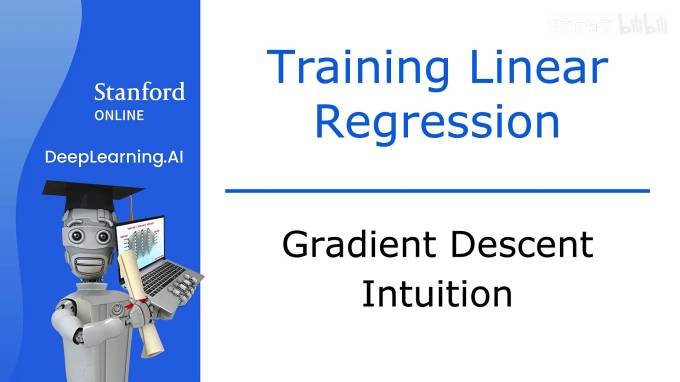
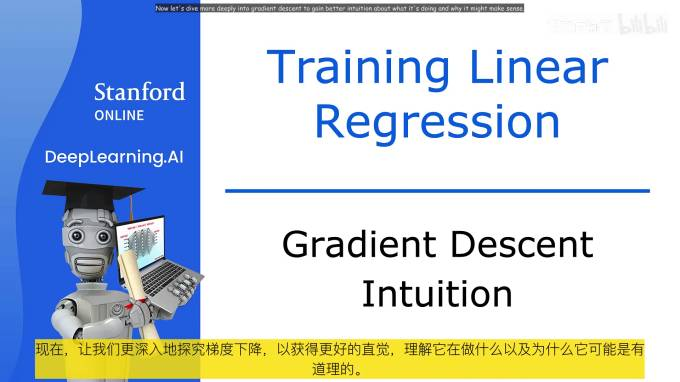
00:14这是你在上一期视频中看到的梯度下降算法。
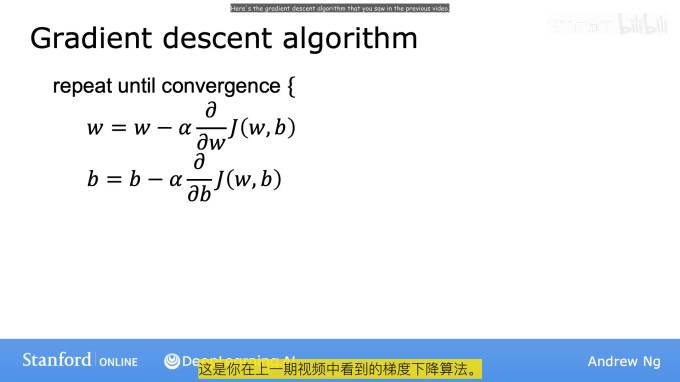
00:18提醒一下，这个变量，这个希腊符号 alpha，是学习率。
00:24学习率控制着你在更新模型参数 w 和 b 时所迈步幅的大小。
00:32那么这里的这一项，这个 d 比 dw，是一个导数项。
00:38按照数学惯例，这个 d 在这里用的是这种有趣的字体。
00:44万一有观看者拥有数学博士学位，或者是多变量微积分专家，他们可能会想，那不是导数，那是偏导数。
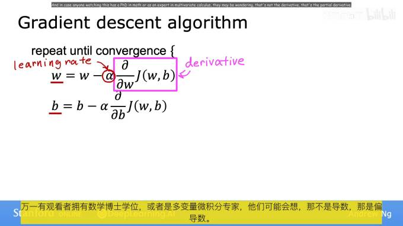
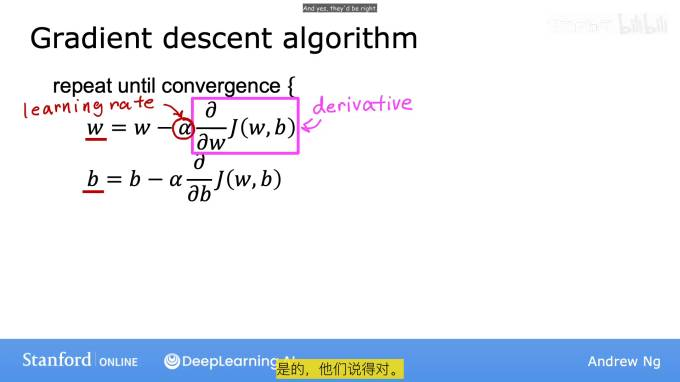
00:56但出于实现机器学习算法的目的，我就直接称之为导数，不去纠结这些细小的区别了。
01:06所以我们现在要重点关注的是，更直观地理解这个学习率以及这个导数项在做什么，以及为什么当它们像这样相乘时，会导致参数 w 和 b 的更新。
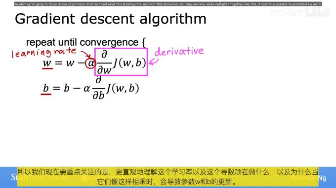
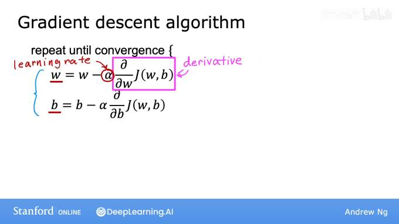
01:23为了做到这一点，我们使用一个稍微简单的例子，在这个例子中我们致力于最小化仅一个参数。
01:32假设你有一个仅关于一个参数 w 的代价函数 J，其中 w 是一个数字。
01:40这意味着梯度下降现在看起来像这样。
01:44w 被更新为 w 减去学习率 alpha 乘以 J 括号 w 对 w 的导数。
01:53你正试图通过调整参数 w 来最小化代价。
01:59这就像我们之前的例子，当时我们暂时将 b 设为零。
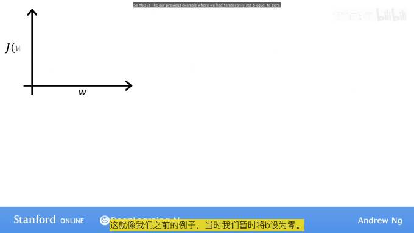
02:05只有一个参数 w 而不是两个，你就能看代价函数 J 的二维图，而不是三维图。
02:15我们来看看梯度下降对这个函数 J 括号 w 做了什么。
02:21这里，横轴是参数 w，纵轴是代价 J 括号 w。
02:30现在，让我们用某个 w 的起始值来初始化梯度下降。
02:39想象一下，你从函数 J 上的这个点开始。
02:45梯度下降要做的是，将 w 更新为 w 减去学习率 alpha 乘以 J 括号 w 对 w 的导数。
02:56我们来看看这个导数项意味着什么。
03:00理解曲线上这一点导数的一种方法是，画一条切线，也就是一条在那一点与该曲线相切的直线。
03:12在数学上，这条线的斜率就是函数 J 在这一点的导数。
03:18为了得到斜率，你可以画个像这样的小三角形。
03:24如果你计算这个三角形的高除以宽，那就是斜率。
03:30举例来说，这个斜率可能是，比如，二除以一。
03:36当切线朝右上方时，斜率为正，这意味着这个导数是一个正数，所以它大于零。
03:48因此，更新后的 w 将是 w 减去学习率乘以某个正数。
03:59所以，如果你用 w 减去一个正数，你最终得到的新 w 值会变小。
04:07所以在图上，你是在向左移动。
04:14你可能会注意到，如果你目标是降低代价 J，这样做是正确的，因为当你在这条曲线上向左移动时，代价 J 会减小，你正越来越接近 J 的最小值，最小值在这里。
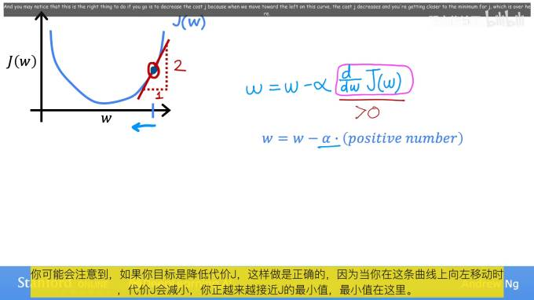
04:30所以到目前为止，梯度下降似乎在做正确的事情。
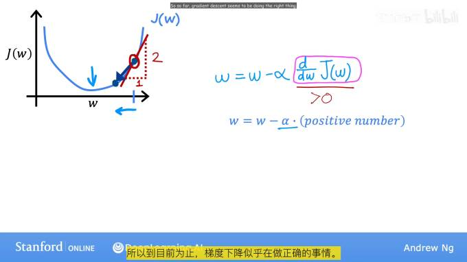
04:35现在，让我们看看另一个例子。
04:38我们取和上面相同的函数 J 括号 W，但现在假设你将梯度下降初始化在一个不同的位置。
04:48比如，为 W 选一个起始值，在左边这里。
04:57现在，记住导数项是 J 括号 w 对 w 的导数。
05:05当我们看上图这一点的切线时，这条线的斜率就是 J 在这一点的导数。
05:12但这条切线是朝右下方倾斜的。
05:16所以这条向右下倾斜的线具有负斜率。
05:21换句话说，J 在这个点的导数是一个负数。
05:26例如，如果你画一个三角形，那么像这样的高是负二，宽是一。
05:34所以斜率是负二除以一，结果是负二，一个负数。
05:41所以当你更新 w 时，你得到的是 w 减去学习率乘以一个负数。
05:48这就意味着你从 w 中减去一个负数。
05:53但减去一个负数意味着加上一个正数，所以你最终增加了 w。
06:03因为减去一个负数，等同于给 w 加上一个正数。
06:09所以这一步梯度下降导致 W 增加，这意味着你在图上向右移动，而你的代价 J 已经下降到这里了。
06:22再一次，看起来梯度下降在做合理的事情。
06:30所以希望这最后两个例子，能展示一些关于导数项在做什么，以及它为何能帮助梯度下降改变 W 以带你接近最小值的背后直觉。
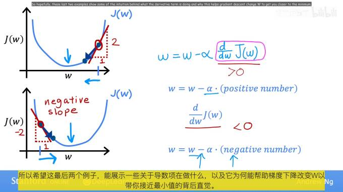
06:44我希望这期视频让你对梯度下降中导数项的作用有了一定的理解。
06:51梯度下降算法中另一个关键的量是学习率 alpha。
06:58如果它太小会怎样，或者如果它太大会发生什么？
07:04在下期视频中，让我们更深入地看看参数 alpha，以帮助建立关于它做什么的直觉，以及如何为你的梯度下降实现选择一个好的 alpha 值。